Ashoro
Ashoro · Hokkaido
Ashoro
Highlighted on the Hokkaido map.
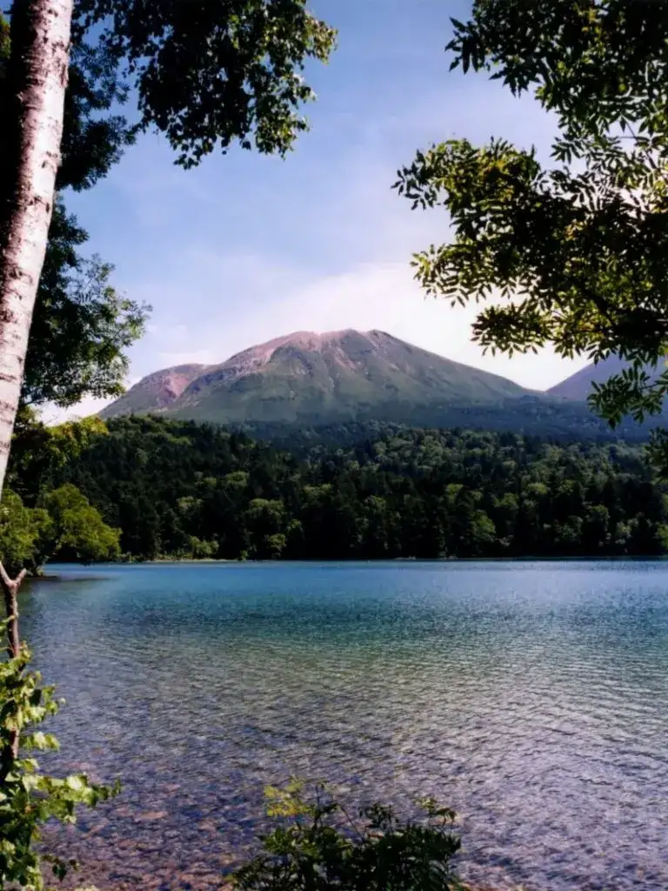
Stay
鶴屋旅館
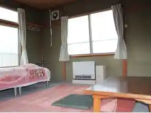
Tsuruya Ryokan
ホテル レウス アショロ
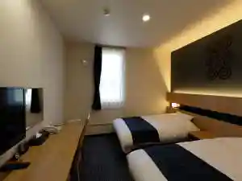
Hoteru Reusu Ashoro
Akala HOTEL
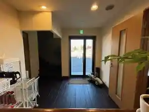
Akala Hotel
ＫＯＹＡ．ｌａｂ 陵雲荘
K O Y A . L A B Ryouun Sou
芽登温泉ホテル
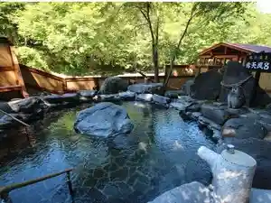
Me Tou Onsen Hoteru
Dining
くつろぎ酒場 大
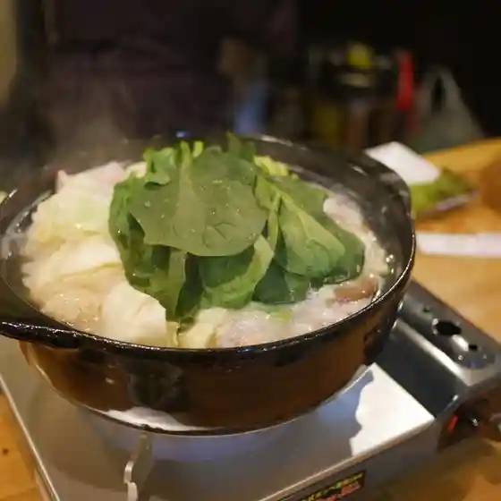
Kutsurogi Sakaba Dai
ティーバード
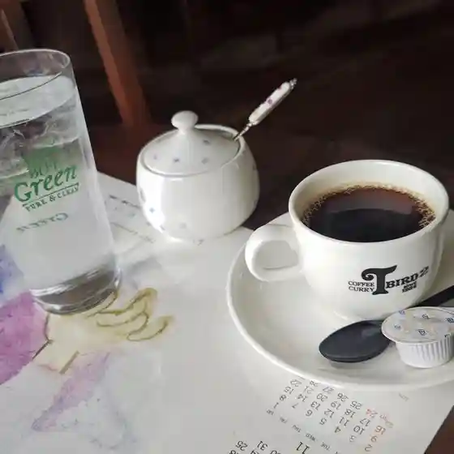
Teiibaado
寶龍 足寄店
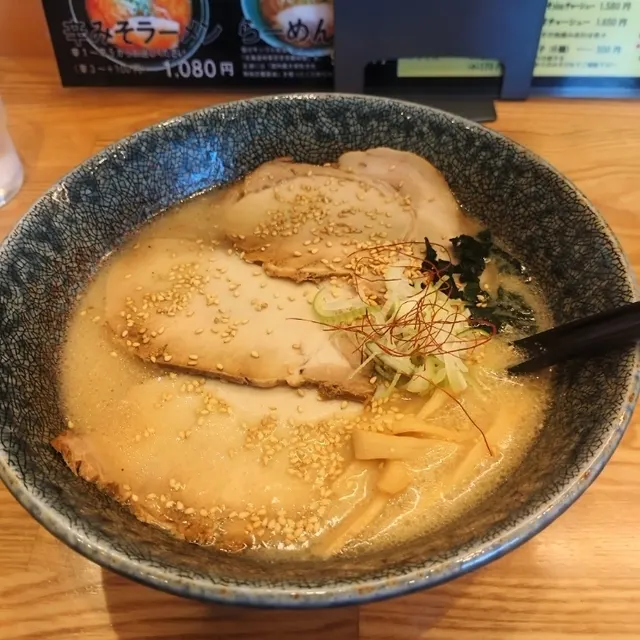
Houryuu Ashoro Mise
寳龍 足寄店
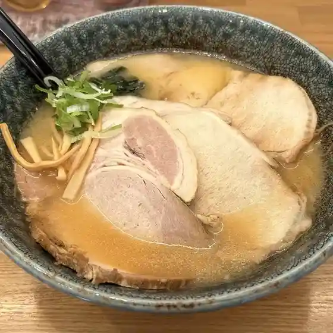
Houryuu Ashoro Mise
みどりちゃんのOMISE
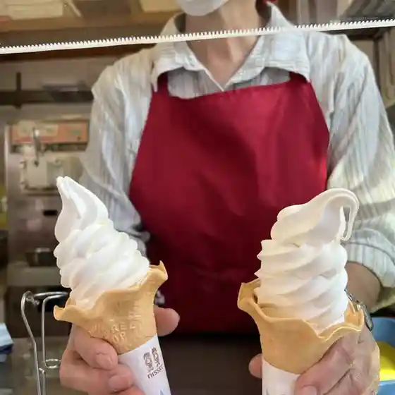
Midorichanno Omise
pastel REUS
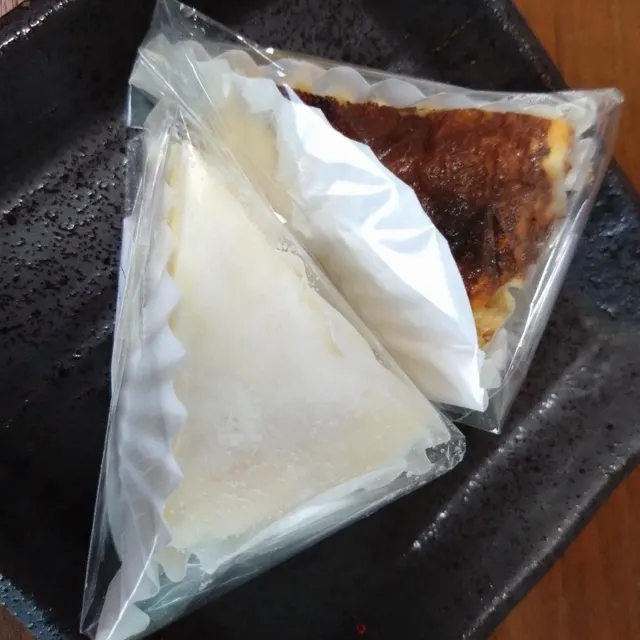
Pastel Reus
レストラン あしょろ
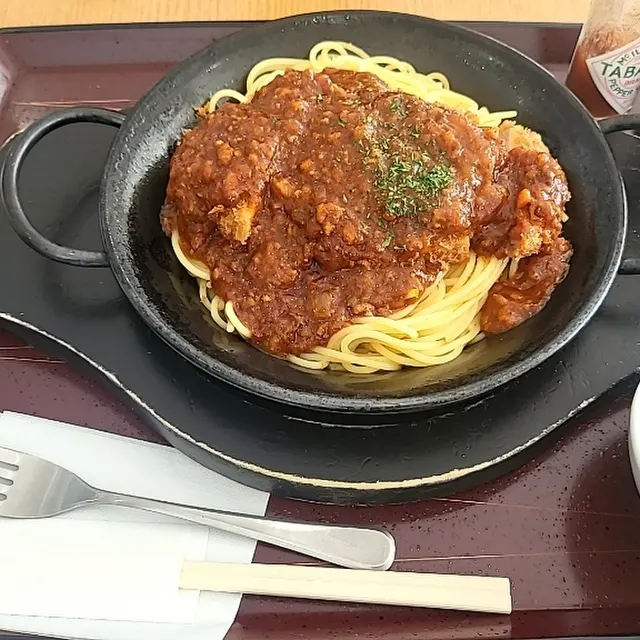
Resutoran Ashoro
ひさご
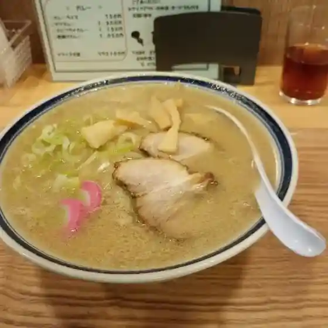
Hisago
そば処 丸三真鍋
Soba Tokoro Marusan Manabe
足寄民宿いずげん
Ashoro Minshuku Izugen
フクハラ 足寄店
Fukuhara Ashoro Mise
BLANK HARD CIDER WORKS
Blank Hard Cider Works
Maison chou chou
Maison Chou Chou
王将
Oushou
すし太郎
Sushi Tarou
カフェ デ カミーノ
Kafe De Kamiino
なんだてい
Nandatei
ベーカリー あしょろ
Beekarii Ashoro
たけべ民宿旅館
Takebe Minshuku Ryokan
足寄観光物産館
Ashoro Kankou Bussan Kan
足寄ひだまりファーム
Ashoro Hidamari Faamu
両国食堂
Ryougoku Shokudou
Rocca
Rocca
阿部養蜂場
Abe Youhou Ba